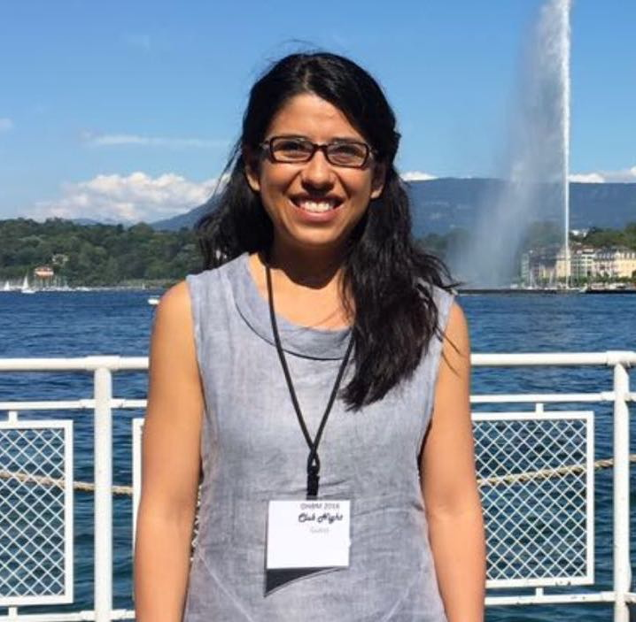

Azalea Reyes Aguilar
Profesor

Intereses en investigación:
Neurociencias cognitivas, sociales y afectivas. Actualmente me interesa estudiar los cambios neurocognitivos sociales y emocionales asociados a la experiencia reproductiva.
azaleara@comunidad.unam.mx azalea@neurocogcialab.org
Karla Angélica Vargas Reyes
Tesista, Licenciatura en psicología
Intereses en investigación:
Egresada de la Facultad de Psicología, UNAM. Realizó una Estancia de Investigación en el Instituto de Investigación Biomédica de Cádiz (INIBICA), España; en donde colaboro en un proyecto relacionado con el registro de señales electrofisiológicas en humanos, en colaboración con la Universidad Loyola Andalucía (ULA). Actualmente realiza su tesis de grado en Empatía y Personalidad. Áreas de interés: Neurocognición, empatía, lenguaje.
Ana Karen Rodríguez Chávez
Servicio Social, Licenciatura en psicología
Intereses en investigación:
Neurobiología de las adicciones y de las emociones; enfermedades neurodegenerativas y del neurodesarrollo; neurobiología de la conducta social modulada por diferentes contextos.
César Daniel Rodríguez Martínez
Servicio Social, Licenciatura en psicología
Intereses en investigación:
Traumatismo craneoencefálico; psicofisiologia, electroencefalografia y potenciales relacionados a eventos.
Javier Antonio Trocino García
Servicio Social, Licenciatura en psicología
Intereses en investigación:
Psicobiología y neurociencias y Enfermedades Neurodegenerativas.
Diana Quetzali Ramos Ramírez
Prácticas en investigación, Licenciatura en psicología
Intereses en investigación:
Neurocognición y conducta; enfermedades neurodegenerativas; neurobiología de las adicciones y actividades socio-culturales.
Brenda Celeste Díaz Hernández
Prácticas en investigación, Licenciatura en psicología
Intereses en investigación:
Neurocognición; trastornos del sueño; demencias; cognición social y psicología organizacional.
brenda.celeste.diaz.h@gmail.com
Estefanía Pérez Perea
Prácticas en investigación, Licenciatura en psicología
Intereses en investigación:
Enfermedades neurodegenerativas; neurocognición y actividades culturales.